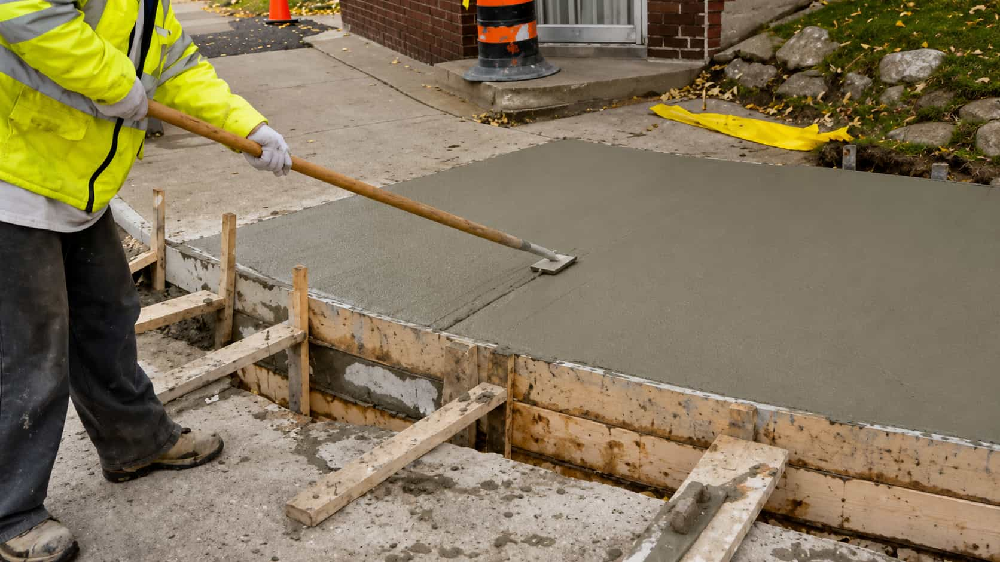

Define the main service goal first, such as a new surface, replacement, repair, decorative finish, or early project planning.
CONCRETE SERVICE PATHS
Compare Concrete Categories Before You Start
Swipe through the main SlabWay concrete categories and choose the path that best matches your project request.
HOW SLABWAY WORKS
Three Simple Steps To Start Comparing Concrete Options
Choose a concrete category, describe the project, and use SlabWay to start comparing local provider options from one clear request path.
SMARTER REQUEST PLANNING
Compare Concrete Service Options With Better Project Context
SlabWay helps homeowners organize service details before reviewing provider options. Share the project type, current condition, and request goals so the comparison path feels clearer and more useful from the start.
Start Request
Add useful notes like approximate size, surface condition, access limits, slope, drainage concerns, and finish direction.
SlabWay helps organize the request so homeowners can review local provider options with clearer project context.
The homeowner reviews available options and chooses directly. SlabWay does not pour, install, repair, inspect, or guarantee concrete work.
COMPARE REQUEST PATHS
A Simpler Way To Review Concrete Service Options
Direct Contractor Search
- Searching each concrete provider separately
- Repeating the same project details many times
- Harder to compare categories, quotes, and project fit
- More time spent organizing basic request information
SlabWay Matching Path
- One clear request path for concrete project details
- Driveways, patios, slabs, repairs, stamped finishes, and walkways
- Compare possible local provider options from one platform
- You choose directly — SlabWay does not perform concrete work